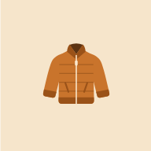

Jacket? Privacy Policy
- No account, no ads, no analytics and no tracking.
- Your settings and optional profile stay on your device. We don’t run servers that receive them.
- To get a forecast, the app sends your chosen place, rounded to about 1 km, to the weather service Open-Meteo.
- You can delete everything at any time.
Who we are
Jacket? (“the app”) is made by One Answer Apps, an independent developer. It tells you whether to take a jacket for a place and time, using a weather forecast and your own preferences. This policy covers the app on Android and on the web at takeajacket.com.
What stays on your device
The app saves the following in your device’s app storage. It is never sent to us, and we have no way to see it.
| Data | Why |
|---|---|
| Your chosen place, or your device location if you choose “Use my location”, and recent places | To show the forecast for where you’re going |
| Preferences: how easily you get cold, usual activity, units | To set your personal “jacket point” |
| Optional profile: age range, sex, the climate you grew up in | Age range and sex slightly adjust your jacket point. Climate is saved but not used yet. |
| Optional ethnic or ancestral background, saved only if you tick the consent box | Slightly adjusts your jacket point |
| Your answers to “How did your outing go?” | To fine-tune your jacket point over time |
| Recent forecasts, for up to 24 hours | So the app opens instantly and works briefly offline |
Age, sex and ethnic background are optional. You can answer “Prefer not to say” or skip them. Ethnic background is sensitive information: the app asks for your explicit consent before saving it, uses it only to adjust your result, and never shares it or uses it for ads.
What leaves your device
Weather forecasts. To get a forecast, the app sends the place’s latitude and longitude, rounded to about 1 km, to Open-Meteo. When you search for a city, the text you type is sent to Open-Meteo’s place search. No profile information, preferences or identifiers are sent. Like any website, Open-Meteo receives your IP address with each request. See Open-Meteo’s terms and privacy policy.
App hosting. The app’s files are served by GitHub Pages. GitHub may log your IP address when the app loads, as described in the GitHub Privacy Statement.
Android. On Android, the app runs in Google Chrome or your default browser, whose own privacy policy applies to the browser itself. Google Play may also provide us with aggregated, non-identifying statistics such as install counts and crash reports.
We don’t sell data, share it with advertisers or data brokers, or use it for tracking.
Location
The app reads your location only if you choose “Use my location”, only while the app is open, and only with your permission. It is not tracked in the background. You can search for a city instead, or turn location access off in your device settings at any time.
Deleting your data
- To delete your optional profile and learned adjustment: open Settings and tap Delete my optional profile data.
- To delete everything: uninstall the app, or clear its storage in your device or browser settings.
Because we never receive your data, there is nothing stored with us to delete.
Children
The app is intended for adults and is not directed at children under 13.
Not a safety service
A jacket suggestion is not a safety assessment. In severe weather, follow official warnings.
Changes
If this policy changes, we’ll update this page and its effective date. Significant changes will also be noted in the app’s release notes.
Contact
Questions about privacy? Contact One Answer Apps at the developer email address shown on the app’s Google Play page.